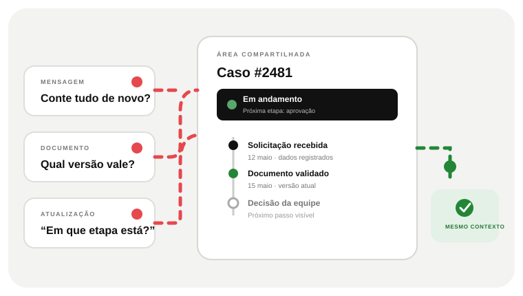

01 · A ENTRADA
O cliente sabe por onde começar?
Um caminho único apresenta as opções, recolhe o contexto necessário e evita que cada solicitação vire uma conversa nova.


 SITES · SOFTWARE · SISTEMASDescrever um projeto
SITES · SOFTWARE · SISTEMASDescrever um projetoQUANDO O CLIENTE REPETE DADOS PARA CONTINUAR
Quando pedidos, documentos e atualizações ficam espalhados, o cliente precisa recontar o caso e a equipe reconstruir o histórico. Uma plataforma reúne acesso, andamento e próximo passo em torno do mesmo processo.

UMA JORNADA DIGITAL PRECISA FAZER SENTIDO
Cliente e equipe precisam acompanhar o mesmo caso.
QUANDO A JORNADA DO CLIENTE SE ESPALHA EM CANAIS
A experiência do cliente e o trabalho da equipe precisam avançar pelo mesmo caminho.
Um caminho único apresenta as opções, recolhe o contexto necessário e evita que cada solicitação vire uma conversa nova.
Formulários, documentos, regras e responsáveis devem funcionar como partes da mesma experiência.
Status claros reduzem a necessidade de perguntar novamente e deixam o próximo passo visível.
Painéis e filas de trabalho organizam entradas, exceções e decisões internas sem duplicar dados.
Integrações, suporte e regras de acesso mantêm a plataforma conectada ao serviço que a empresa entrega.
PLATAFORMA DIGITAL EMPRESARIAL · O PROBLEMA VISÍVEL
E-mail, PDF e conversa ainda podem ser úteis. O atrito começa quando ninguém sabe onde consultar o que já aconteceu ou o que deve acontecer agora.
Sem histórico compartilhado, cliente e equipe remontam o pedido e voltam a confirmar informações.
Uma plataforma pode organizar documentos, permissões e versão atual sem pedir que o cliente procure anexos antigos.
Quando não existe um lugar para acompanhar etapas, o cliente não sabe se algo está parado, em revisão ou concluído.
O TRABALHO QUE PRECISA SER FEITO
Portal de cliente, área autenticada, central de solicitações ou marketplace são formatos diferentes. O ponto comum é a jornada compartilhada — não o tamanho da interface.
Apresentar a tarefa, os documentos necessários e o destino da solicitação antes que ela chegue à equipe.
Manter contexto, arquivos e mudanças de etapa associados ao mesmo pedido ou conta.
Definir o que clientes, equipe e administradores podem consultar ou alterar, e como a plataforma trata exceções.
DECIDIR SEM APEGO À TECNOLOGIA
Uma plataforma vale o investimento quando várias pessoas fazem tarefas recorrentes com dados compartilhados, regras de acesso ou andamento próprio.
DO PROBLEMA A UM ESCOPO DECIDÍVEL
Defina o ponto de entrada, o histórico que acompanha cada caso, os acessos e o que cada pessoa precisa ver na próxima etapa.
Identificamos o que cliente e equipe fazem, em que ordem e com quais dados.
Escolhemos acesso, estados, notificações e o que acontece quando uma solicitação sai do caminho padrão.
Começamos pela jornada de maior valor e expandimos depois de testar uso, operação e suporte.
PERGUNTAS DE QUEM ESTÁ AVALIANDO
O site apresenta informação e facilita contato. A plataforma acrescenta tarefas que dependem de conta, dados, histórico, interação ou operação contínua.
Sim. O portal pode concentrar solicitações, documentos e andamento. O escopo depende de quem usa, do que pode acessar e da equipe que mantém o serviço.
Não. Uma jornada prioritária pode validar regras e operação antes de adicionar outros módulos.
UMA CONVERSA COMEÇA COM UM CASO REAL